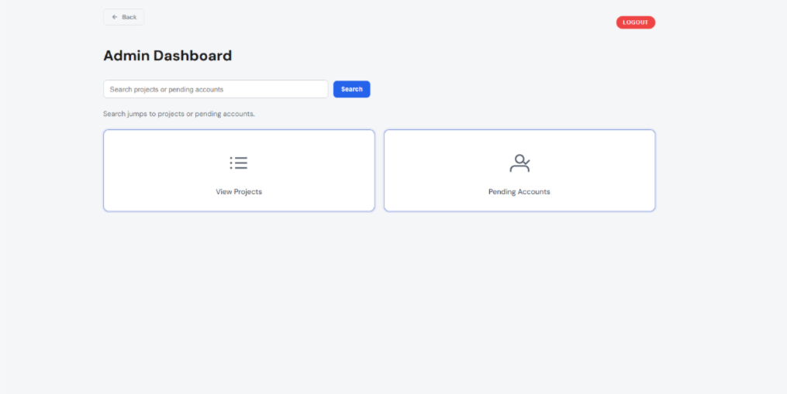
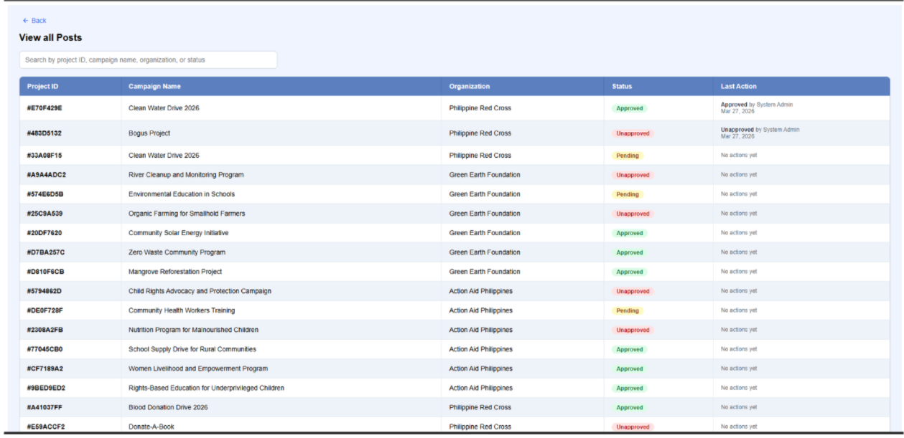

BayaniHub
A platform that helps a company’s CSR committee find verified NGOs, track monetary, goods and volunteer needs in one place, and keep a record of receipts and cumulative impact. We interviewed stakeholders and possible users which shaped the problem analysis and requirements of the system.
- My role
- Stakeholder liaison and full-stack contributor. I found and arranged the interviews with the company's HR team and a public school principal, designed the database schema, and built parts of the backend and frontend.
- Stack
- React on Vercel, Node.js API on Railway, PostgreSQL with Prisma.
- Problems solved
- Slow discovery of verified NGOs that need help, receipts that may get lost, and separate trackers for monetary, goods and volunteers.
Full walkthrough of the features (~15 minutes)

